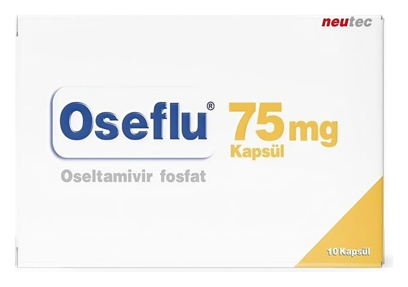

Oseflu 75 mg Kapsül, 10 Adet

Ne için kullanılır
KT · Bölüm 1OSEFLU yetişkinler, ergenler, çocuklar ve 2 haftadan büyük yenidoğanlarda grip (influenza) salgını sırasında tedavi için kullanılır. 2 haftadan büyük yenidoğanlarda tedaviye grip belirtilerinin görüldüğü ilk 2 gün içinde başlanmalıdır.
OSEFLU aynı zamanda yetişkinler, ergenler, çocuklar ve 1 yaş veya üstündeki bebeklerde grip (influenza) salgını sırasında gribin önlenmesi için kullanılır.
OSEFLU’nun etkin maddesi oseltamivir’dir. OSEFLU “nöraminidaz inhibitörleri” denen bir ilaç grubuna dahildir. Bu ilaçlar grip virüsünün vücudun içinde yayılmasını engeller. Bu ilaçlar, grip virüsü enfeksiyonu belirtilerini dindirir veya engeller.
OSEFLU, erken doğan (prematüre) ve 2 haftalıktan küçük bebeklerde kullanılmamalıdır.
Bu belge 5070 sayılı Elektronik İmza Kanunu uyarınca elektronik olarak imzalanmıştır. Doküman https://www.turkiye.gov.tr/saglik-titck-ebys adresinden kontrol edilebilir. Güvenli elektronik imza aslı ile aynıdır. Dokümanın doğrulama kodu : 1S3k0ZmxXZW56RG83Q3NRQ3NRYnUy Bu belge 5070 sayılı Elektronik İmza Kanunu uyarınca elektronik olarak imzalanmıştır. Doküman https://www.turkiye.gov.tr/saglik-titck-ebys adresinden kontrol edilebilir. Güvenli elektronik imza aslı ile aynıdır. Dokümanın doğrulama kodu : 1S3k0ZmxXZW56RG83Q3NRQ3NRYnUy
OSEFLU, kapsül (açık gri opak kap, ivory opak kapak) içinde beyaz toz olarak üretilir.
OSEFLU 75 mg kapsüller 10 kapsül içeren ambalajlarda piyasaya sunulmaktadır.
OSEFLU size gribi (influenza) tedavi etmek amacıyla reçete edilmiştir. Grip belirtileri gösterdiğinizde ve grip virüsünün toplumda yaygın görüldüğü durumlarda kullanılabilir. Diğer zamanlarda aşağıda listelenen şekilde kullanılabilir: OSEFLU gribi önlemek amacıyla reçete edilir. Grip olan biriyle temasta bulunduysanız OSEFLU kullanılabilir. Bu kullanım için genellikle duruma göre karar verilir. OSEFLU, istisnai durumlarda önleyici tedavi olarak reçete edilir. Örneğin, mevsimsel grip aşısı yeterli korumayı sağlamadığında ve grip salgını (küresel grip salgını) varsa OSEFLU kullanılabilir.
OSEFLU, grip salgını sırasında, 1 yaşından küçük bebeklerde gribi tedavi etmek amacıyla, sadece geçici süreyle, salgın esnasında, bir doktor önerisiyle veya bir doktorun gözetiminde kullanılması şartıyla kullanılır. Doktorlar, bebeğin bu ilaçtan uygun fayda sağladığından emin olmak için, bu yaştaki bebeklerde OSEFLU’yu kullanıp kullanmamak konusunda, grip virüsünün sebep olduğu hastalığın şiddeti ve bebeğin sağlık durumuna dayanarak karar verir.
Grip, bir virüsün neden olduğu bir enfeksiyondur. Gribin belirtileri sıklıkla ateşin ani yükselmesi (>37,8 o C), öksürük, burun akıntısı veya tıkanıklığı, baş ağrısı, kas ağrıları ve aşırı bitkinliktir. Bu belirtiler aynı zamanda diğer hastalıklar nedeniyle de oluşabilir. Gerçek grip enfeksiyonları yalnızca toplumda grip virüslerinin dolaştığı yıllık salgın dönemlerinde ortaya çıkar. Bu salgın dönemi dışında, grip benzeri belirtiler, genellikle başka enfeksiyonlar veya hastalıklar nedeniyle oluşur.